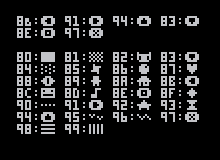

pico-8 manpage
# version 0.1.10
pico-8 [switches] [filename.p8] # run pico-8 from the system cli
-run # boot filename.p8 on startup
-width n # set the window or screen width and adjust scale to fit if not specified
-height n # set the window or screen height and adjust scale to fit if not specified
-windowed b # set windowed mode off (0) or on (1)
-sound n # sound volume [0..256]
-music n # sound volume [0..256]
-joystick n # joystick controls starts at player n [0..7]
-pixel_perfect b # set filter for screen stretching off (0) or on (1)
-draw_rect x,y,w,h # window coordinates and size
-splore # boot in splore mode
-home path # customise home directory
-desktop path # set desktop path for screenshots and gifs
-screenshot_scale n # size of each screenshot pixel; default = 3
-gif_scale n # size of each gif pixel; default = 2
-gif_len n # set the maximum gif length in seconds; n in [1..120]
-gui_theme n # set the code editor theme; 0 = classic, 1 = dark blue
-timeout n # timeout switch for splore downloads
-frameless b # set borderless window off (0) or on (1)
-show_fps b # set fps display off (0) or on (1)
pico-8 specs
- display: 128x128, fixed 16 colour palette
- input: 6 buttons
- cartridge size: 32k
- sound: 4 channel, 64 definable chip blerps
- code: lua, max 8192 tokens of code
- sprites: single bank of 128 8x8 sprites + 128 shared
- map: 128x32 8-bit cels + 128x32 shared

audio manipulation
music([n, [fade_len, [channel_mask]]]) -- play music; n = -1: stop
sfx(n, [channel, [offset]]) -- play sfx; n = -1: stop in channel; n = -2: release loop in channel
cart data manipulation
cartdata(id) -- open cart data named id (once per execution!)
dget(idx) -- get number at index
dset(idx, val) -- set number at index to value
cocreate(f) -- returns a coroutine that executes f
coresume(c) -- resume coroutine c execution
costatus(c) -- returns true if c is still executing, false otherwise
yield() -- use inside a coroutine; makes a coroutine pause execution until next resume

graphics manipulation
camera([x, y]) -- set camera position
circ(x, y, r, [col]) -- draw circle
circfill(x, y, r, [col]) -- draw filled circle
clip([x, y, w, h]) -- set screen clipping region
cls([col]) -- clear screen; col = clear color
color(col) -- set default color
cursor(x, y) -- set cursor and CR/LF margin position
fget(n, [f]) -- get values of sprite flags
flip() -- flip screen back buffer (30fps)
fset(n, [f], v) -- set values of sprite flags
line(x0, y0, x1, y1, [col]) -- draw line
pal(c0, c1, [p]) -- switch colour 0 to colour 1; p = 0 = draw palette; p = 1 = screen palette
palt(col, t) -- set transparency for colour to t (bool)
pget(x, y) -- get pixel colour
print(str, [x, y, [col]]) -- print string
pset(x, y, [col]) -- set pixel colour
rect(x0, y0, x1, y1, [col]) -- draw rectangle
rectfill(x0, y0, x1, y1, [col]) -- draw filled rectangle
sget(x, y) -- get spritesheet pixel colour
spr(n, x, y, [w, h], [flip_x], [flip_y]) -- draw sprite
sset(x, y, [col]) -- set spritesheet pixel colour
sspr(sx, sy, sw, sh, dx, dy, [dw, dh], [flip_x], [flip_y]) -- draw texture from spritesheet
map manipulation
map(cel_x, cel_y, sx, sy, cel_w, cel_h, [layer]) -- draw map; layers from flags; sprite 0 is empty
mapdraw(cel_x, cel_y, sx, sy, cel_w, cel_h, [layer]) -- same as 'map()'; draw map
mget(x, y) -- get map value
mset(x, y, v) -- set map value
math functions
-32768.0 .. 32767.99 -- numeric representation range
abs(x) -- x absolute value
atan2(dx, dy) -- convert (dx, dy) to an angle in [0..1]
band(x, y) -- bitwise conjunction
bnot(x) -- bitwise negation
bor(x, y) -- bitwise disjunction
bxor(x, y) -- bitwise exclusive disjunction
cos(x) -- x cosine, [0..1]
flr(x) -- round down
-flr(-x) -- not a function per se, but will work as ceil(x)
max(x, y) -- x/y maximum
mid(x, y, z) -- x/y/z middle value
min(x, y) -- x/y minimum
rnd(x) -- random; 0 <= n < x
sgn(x) -- returns argument sign: -1 or 1; sgn(0) = 1
shl(x, y) -- shift left
shr(x, y) -- shift right
sin(x) -- x sine, [0..1]; inverted
sqrt(x) -- x square root
srand(x) -- set random seed
operators
a = b -- assignment
a + b -- sum
a - b -- sub
a * b -- mul
a / b -- div
a % b -- mod
a ^ b -- pow
a += b -- sum to
a -= b -- sub to
a *= b -- mul to
a /= b -- div to
a %= b -- mod to
a ^= b -- pow to
a == b -- compare equals
a ~= b -- compare not equals
a != b -- compare not equals
a > b -- compare greater than
a < b -- compare less than
a >= b -- compare greater than or equals
a <= b -- compare less than or equals
not a -- boolean negation
a and b -- boolean conjunction
a or b -- boolean disjunction
(a) -- operation delimiters
flow control
::label:: -- label
goto label -- jump
if (<condition>) -- inline if
if <condition> then
-- if block
elseif <condition> then
-- elseif block
else
-- else block
end
while <condition> do
-- while block
end
repeat
-- repeat block
until <condition>
for <var> = <first>, <last>, <step> do
-- for block
end
for <var> in all(<table>) do
-- for block
end
for <key>, <value> in pairs(<table>) do
-- for block
end
memory manipulation
cstore(dest_addr, src_addr, len, [filename]) -- copy bytes from ram to rom [load from filename; works with multi-cart export]
memcpy(dest_addr, src_addr, len) -- copy bytes
memset(dest_addr, val, len) -- set len bytes to val
peek(addr) -- read byte in ram address
poke(addr, val) -- write val in ram address
reload(dest_addr, src_addr, len, [filename]) -- copy bytes from rom to ram [load from filename; works with multi-cart export]
memory types
1. base ram (32kB)
2. cart rom
3. lua ram (1MB)
ram layout
0x0 - gfx
0x1000 - gfx2/map2 (shared)
0x2000 - map
0x3000 - gfx_props
0x3100 - song
0x3200 - sfx
0x4300 - user data
0x5e00 - persistent cart data (256 bytes)
0x5f00 - draw state
0x5f40 - hardware state
0x5f80 - gpio pins (128 bytes)
0x6000 - screen (8k)
devkit input mode
poke(0x5f2d, 1) -- enable devkit input mode
stat(30) -- read keyboard had input (bool)
stat(31) -- read keyboard character
stat(32) -- read x coord
stat(33) -- read y coord
stat(34) -- read button bitmask; 1 = primary, 2 = secondary, 4 = middle
extra graphics modes
poke(0x5f2c, 0) -- standard, 128x128
poke(0x5f2c, 1) -- horizontal stretch, 64x128
poke(0x5f2c, 2) -- vertical stretch, 128x64
poke(0x5f2c, 3) -- zoomed, 64x64
poke(0x5f2c, 4) -- standard, 128x128
poke(0x5f2c, 5) -- mirror left half
poke(0x5f2c, 6) -- mirror top half
poke(0x5f2c, 7) -- mirror top-left quarter
raspberry pi / pocketchip gpio
-- run pico-8 as root ("sudo pico-8")
-- 128 pin values in the range [0..255]
poke(0x5f80, value) -- send value to gpio0
peek(0x5f81) -- get value from gpio1
-- et cetera
execution flow
_draw() -- called once per visible frame
_init() -- called once on program startup
_update() -- called once per update at 30fps
_update60() -- called once per update at 60fps
command line interface
assert(condition) -- verify that condition is true
cd .. -- change to parent directory
cd [dirname] -- change directory
dir() -- list items
exit() -- close pico-8 app
export(filename.html, [cart1.p8, cart2.p8 ... cart15]) -- export game in html; up to 15 extra carts (.p8 format)
export(filename.png) -- export spritesheet
export(filename.wav) -- export the current sfx / music
export(filename%d.wav) -- export all sfx as numbered files
extcmd(cmd) -- control screenshots; "label" = cart label; "screen" = screenshot; "rec" = start gif; "video" = save gif
folder() -- open carts folder in operating system
help() -- show summary of system commands
import(filename.png) -- import spritesheet. expects 128x128 png and colour-fits to the pico-8 palette
info() -- print cart info
install_demos() -- install demo p8 carts alongside pico-8 app
install_games() -- install selection of bbs carts
keyconfig() -- keyboard configuration for player buttons
load("@clip") -- paste cart from clipboard, bbs support
load(filename) -- load cart; works with multi-cart export
ls() -- list items
menuitem(index, [label, callback]) -- add an extra item to the pause menu; index in [1..5]; no label or callback removes the item
mkdir(dirname) -- create directory
printh(str, [filename, overwrite]) -- print str to terminal; append or overwrite to filename
reboot() -- reboot pico8
resume() -- resume cart execution
run() -- boot cart
save("@clip") -- copy cart to clipboard, bbs support
save(filename) -- save cart
shutdown() -- close pico-8 app
splore() -- explore cartridges
stat(x) -- read some execution values, read below
time() -- returns seconds since last reboot
type(v) -- returns type of v: number, string or table
stats
stat(0) -- memory usage in [0..1024]
stat(1) -- cpu usage; 1.0 == 100% cpu at 30fps
stat(4) -- clipboard; after user pressed ctrl-v
stat([16..19]) -- index of playing sfx on channels [0..3]
stat([20..23]) -- note number (0..31) on channels [0..3]
stat(30) -- keyboard key hit; see "peek / poke" tab
stat(31) -- keyboard character; see "peek / poke" tab
stat(32) -- mouse x coord; see "peek / poke" tab
stat(33) -- mouse y coord; see "peek / poke" tab
stat(34) -- mouse button bitmask; see "peek / poke" tab
javascript
pico8_gpio[] // read and write gpio pins
pico8_buttons[] // bitfields for player input
private functions (use carefully)
_get_frames_skipped() -- used automatically by _mainloop()
_get_menu_item_selected(n) -- returns true or false if the n-th menu item is selected; n in [1..5]; used automatically by _mainloop()
_mainloop() -- main pico-8's "while true"
_pausemenu[n].callback() -- execute the n-th menu item's callback; n in [1..5]; used automatically by _mainloop()
_set_mainloop_exists(n) -- ?
_update_buttons() -- used automatically by _mainloop()
holdframe() -- used automatically by _mainloop()

string manipulation
#s -- string length
"three " .. 4 -- string concatenation
sub(str, from, [to]) -- substring
"123.45" + 0 -- cast parseable string to number; "0xAF" format for hex
special characters
print("l:\x8b r:\x91 u:\x94 d:\x83 o:\x8e x:\x97")
table manipulation
add(t, v) -- add v to t
all(t) -- used in 'for v in all(t)' loops
count(t) -- returns number of elements in the table
del(t, v) -- delete first instance of v in t
foreach(t, f) -- call f() for each v in t
pairs(t) -- used in 'for k,v in pairs(t)' loops
mt = {} -- init metatable
setmetatable(t, mt) -- set metatable mt to table t
metatables :: special keys
-- object oriented programming; invoked as 't:foo()' / 't:bar()'
fun = {}
function fun.foo(t) dosomething() end
function fun.bar(t) dosomethingmore() end
mt.__index = fun
-- property assignment; invoked when calling 't[k] = v'
function mt.__newindex(t, k, v) rawset(t, k, v) end
-- weak references; keys and / or values
mt.__mode = "k" or "v" or "kv"
-- treat a table like a function; invoked when calling 't()'
function mt.__call(t) dosomething() end
-- hide metatable; returned by 'getmetatable(t)'
public_mt = {}
mt.__metatable = public_mt
-- string casting; returned by 'tostring(t)'
function mt.__tostring(t) return tostring(t) end
-- table length; returned by '#t'
function mt.__len(t) return #t end
metatables :: mathematic operators
-- unary minus; returned by '-t'
function mt.__unm(t) return -t end
-- addition; returned by 'a + b'
function mt.__add(a, b) return a + b end
-- subtraction; returned by 'a - b'
function mt.__sub(a, b) return a - b end
-- multiplication; returned by 'a * b'
function mt.__mul(a, b) return a * b end
-- division; returned by 'a / b'
function mt.__div(a, b) return a / b end
-- modulo; returned by 'a % b'
function mt.__mod(a, b) return a % b end
-- involution; returned by 'a ^ b'
function mt.__pow(a, b) return a ^ b end
-- concatenation; returned by 'a .. b'
function mt.__concat(a, b) return a .. b end
metatables :: comparison operators
-- check for equality; returned by 'a == b'
function mt.__eq(a, b) return a == b end
-- check for less-than; returned by 'a < b'
function mt.__lt(a, b) return a < b end
-- check for less-than-or-equal; returned by 'a <= b'
function mt.__le(a, b) return a <= b end
general
- fullscreen:
- alt + enter / cmd + f
- quit:
- alt + f4 / cmd + q
- reload and run:
- ctrl + r
- save:
- ctrl + s
- mute / unmute:
- ctrl + m
- show fps:
- ctrl + 1
- screenshot:
- ctrl + 6 / f6 / f1
- cart img:
- ctrl + 7 / f7 / f2
- start video:
- ctrl + 8 / f8 / f3
- save video:
- ctrl + 9 / f9 / f4
- keyboard cursor:
- f10
- navigate editors:
- alt + right / alt + left
- cli completion:
- tab
splore
- navigate lists:
- left / right
- navigate carts:
- up / down / home / end / pageup / pagedown
- launch cart:
- x / o / menu
- favourite cart:
- f
sprite / map editor
- undo:
- ctrl + z
- copy (bbs support):
- ctrl + c
- paste (bbs support):
- ctrl + v
- pan:
- space / mmb
- navigate sprites:
- q / w
- navigate colours:
- 1 / 2
- navigate tabs:
- + / -
- fullscreen:
- tab
- zoom:
- mousewheel
- flip y:
- f
- flip x:
- v
- rotate:
- r
- move:
- cursors
draw tool
- replace colour:
- lctrl
- eyedropper:
- rmb
stamp tool
- stamp w/ transparency:
- lctrl
select tool
- select sprites:
- shift + drag
code editor
- skip across words:
- ctrl + left / ctrl + right
- select:
- shift
- select word:
- double click
- cut:
- ctrl + x
- copy:
- ctrl + c
- paste:
- ctrl + v
- undo:
- ctrl + z
- redo:
- ctrl + y
- indent:
- tab
- unindent:
- shift + tab
- duplicate line:
- ctrl + d
- search:
- ctrl + f
- repeat search:
- ctrl + g
- navigate functions:
- alt + up / alt + down
- start / end of code:
- ctrl + up / ctrl + down
- button glyphs:
- shift + l, r, u, d, x, o
- icons:
- shift + qwetyipasfghjkzcvbnm
- glyph mode:
- ctrl + k
sfx / music editor
- play / pause:
- space
- copy:
- ctrl + c
- paste:
- ctrl + v
- set all notes:
- shift + lmb
- modify speed:
- < / >
- navigate:
- home, end, pageup, pagedown, mousewheel
- navigate patterns:
- + / -
- snap to Cm pentatonic:
- ctrl
- speed x4:
- shift
- release loop:
- a
- delete:
- backspace
effects
- 0 ::
- none
- 1 ::
- slide
- 2 ::
- vibrato
- 3 ::
- drop (drum kick!)
- 4 ::
- fade in
- 5 ::
- fade out
- 6 ::
- fast arpeggio (4 notes)
- 7 ::
- slow arpeggio (4 notes)